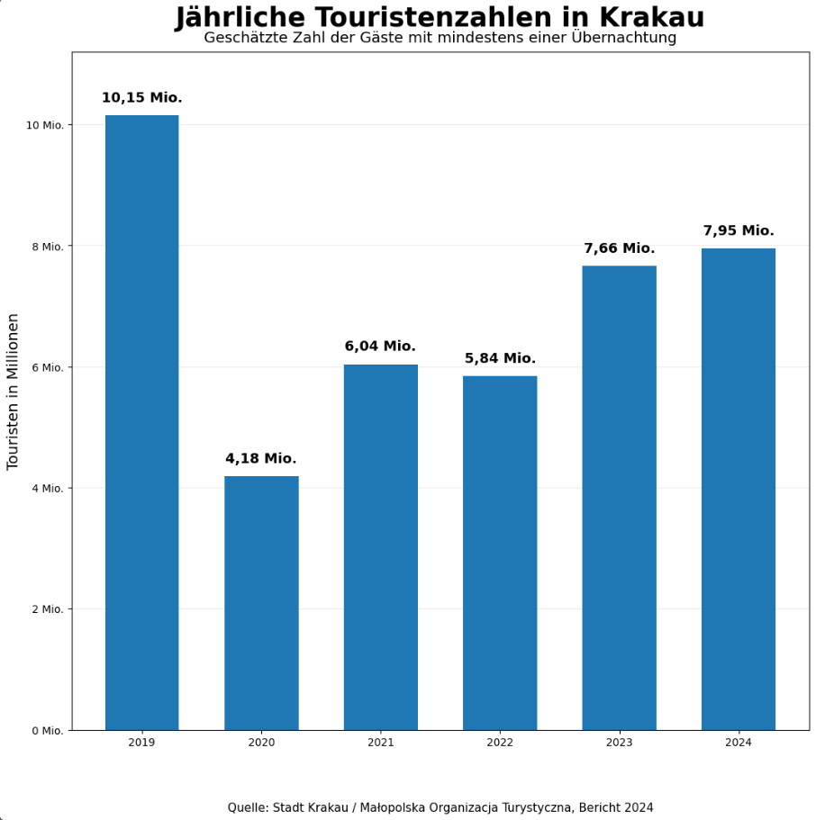
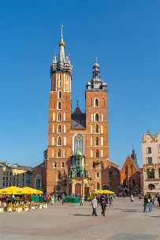
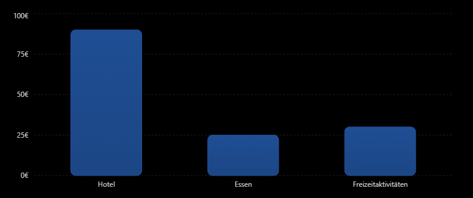

Krakau ist eine Stadt wo es an jeder Ecke vieles zu sehen gibt. Von hin bis zu kleinen Flohmärkten bis hin zu einem riesen großen Marktplatz.
Jährliche Touristenzahlen in Krakau

Das Diagramm zeigt die Entwicklung der jährlichen Touristenzahlen in Krakau von 2019 bis 2024. Während die Besucherzahlen im Jahr 2020 aufgrund der Corona-Pandemie stark zurückgingen, erholte sich der Tourismus in den folgenden Jahren kontinuierlich. Im Jahr 2024 besuchten bereits wieder fast 8 Millionen Touristen die Stadt. Dies zeigt, dass Krakau weiterhin zu den beliebtesten Reisezielen Polens gehört und jedes Jahr Millionen von Besucherinnen und Besuchern anzieht.
Marienkirche Krakau

Die Marienkirche ist eines der bekanntesten Wahrzeichen Krakaus und steht direkt am Hauptmarkt. Besonders berühmt ist der Hejnal Mariacki: Zu jeder vollen Stunde spielt ein Trompeter vom höchsten Turm ein kurzes Signal, das plötzlich abbricht – zur Erinnerung an einen Trompeter, der im Mittelalter während einer Mongoleninvasion von einem Pfeil getroffen wurde.
Kosten für ein Krakau Trip

Das Diagramm zeigt die kosten für einen Tag wenn man in Krakau Urlaub machen möchte. Man kommt schon sehr gut voran wenn man 200 EUR dabei hat.